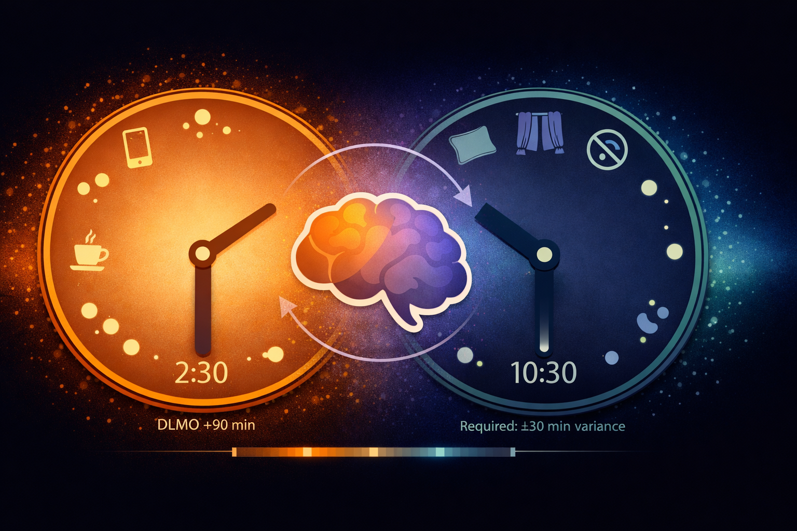

By Rustam Iuldashov
30 years lived experience with chronic migraine | Sources: 23 peer-reviewed references including Eur Child Adolesc Psychiatry (meta-analysis, n=11 studies), BMC Neurology (n=26,456), Psychological Medicine (58 RCTs), Frontiers in Psychiatry | Last updated: March 2026
Medical Review: This content is based on peer-reviewed research from European Child & Adolescent Psychiatry, BMC Neurology, Psychological Medicine, Frontiers in Psychiatry, Nature Genetics, Neurological Sciences, Journal of Attention Disorders, Brain & Development, and Chronobiology International.
Important Notice: This article is for informational purposes only and does not replace professional medical advice. The author is not a licensed physician or healthcare professional. Never adjust ADHD or migraine medication without consulting your prescribing physician.
Key Takeaways
- ADHD and migraine are biologically linked through shared dopamine dysregulation — people with ADHD are roughly twice as likely to have migraine.[1][2]
- Sleep disruption is the most dangerous overlap: up to 80% of adults with ADHD have insomnia, and irregular sleep is a top migraine trigger.[11][12]
- ADHD medications affect migraine unpredictably — methylphenidate raises headache risk by 33%, while amphetamines show no significant increase. Some patients actually improve on stimulants.[14]
- Executive dysfunction creates a cascade of triggers: missed meals, dehydration, medication non-adherence, chronic stress.[18][19]
- The single most impactful strategy: anchor your daily rhythm with a fixed wake time, scheduled meals, consistent moderate exercise, and coordinated care between your ADHD and migraine providers.[11][20][22]
Three alarms. All ignored. By noon, the fluorescent office lights have burrowed behind your eyes, but you’re deep in a hyperfocus tunnel — too locked in to notice the aura creeping into your peripheral vision. By two o’clock, you’re facedown in a dark room with a full-blown migraine. Tomorrow’s ADHD medication will sit untouched on the nightstand, because the postdrome fog will swallow your morning routine whole.
If this cycle feels personal, it is. ADHD and migraine are biologically linked — and science is finally catching up to what millions of people live every day.
Two Conditions, One Broken Signal
The overlap is not coincidence. It’s chemistry.
A meta-analysis of 11 studies found a specific association between ADHD and migraine — not tension-type headache, just migraine — with an odds ratio of 1.32.[1] Among adults, the connection tightens: a Danish cross-sectional study of 26,456 participants reported an odds ratio of 1.8 between migraine and ADHD, with the link strongest in women and those over 40.[2] A 2024 observational cohort confirmed the pattern from the other direction — adults with episodic migraine scored significantly higher on measures of inattention, hyperactivity, and impulsivity than matched controls.[3]
Children show the same signal. In a population-based study of 5,671 Brazilian children, ADHD prevalence was significantly higher among those with migraine than among headache-free peers — and the risk climbed with migraine frequency.[4] A multicenter Turkish study sharpened the picture: migraine appeared in 26% of children with ADHD versus 9.9% of controls. Their mothers showed the same elevated rate.[5]
So why do a neurological pain disorder and a neurodevelopmental attention disorder share a biological address?
The leading suspect is dopamine.
In ADHD, the brain’s dopamine system misfires. Reward circuits don’t regulate the neurotransmitter efficiently — which is why stimulant medications that boost dopamine and norepinephrine remain the first-line treatment.[6] In migraine, the dysfunction mirrors this: people with migraine live with chronic dopaminergic hypofunction — low baseline dopamine that leaves receptors hypersensitive.[7] That hypersensitivity is why prodromal yawning, nausea, and mood shifts arrive before the headache itself. When an ordinary trigger — sudden stress, a weather shift, a skipped meal — causes even a modest rise in dopamine, those hypersensitive receptors overreact. A normal fluctuation becomes a neurological alarm.
Both conditions. Same molecule. Different symptoms.
The genetics back this up. Variations in the DRD2 dopamine receptor gene and the SLC6A3 dopamine transporter gene have been implicated in both migraine susceptibility and ADHD risk.[8] The KIAA0564 gene links migraine to ADHD and bipolar disorder simultaneously.[9] And both conditions share genetic architecture with anxiety, depression, and sleep disorders — suggesting not two separate problems, but branches of the same neurobiological tree.[2][10]
The Sleep Trap
If these conditions share one devastating collision point, it’s sleep.
Insomnia affects up to 80% of adults with ADHD.[11] Not because they stay up scrolling — though they might — but because their internal clocks are literally delayed. A 2025 evidence synthesis in Frontiers in Psychiatry assembled convergent data: melatonin onset runs approximately 90 minutes late in adults with ADHD. Up to 78% show delayed sleep-wake timing. Their core clock genes — BMAL1 and PER2 — oscillate with weakened rhythm. Cortisol patterns are blunted and shifted.[11]
Now place this next to what migraine demands. The migraine brain craves monotony — same bedtime, same wake time, same routine, night after night.[12] The ADHD brain is biologically programmed to resist exactly that.

A delayed sleep phase means late nights, fragmented rest, and exhausted mornings. The migraine attack arrives on schedule the next day. Stimulant medication taken too late compounds the problem by pushing sleep onset even further.[13] The resulting sleep deprivation worsens ADHD — more impulsivity, weaker executive function — and simultaneously lowers the migraine threshold.
One condition feeds the other. The other feeds the first. The loop has no obvious exit.
⚠️ When to Seek Emergency Help
If you experience a sudden, severe headache unlike anything you’ve felt before — especially with confusion, vision loss, weakness on one side of your body, difficulty speaking, or a stiff neck — this may not be migraine. Call your local emergency number immediately.
A new headache pattern that is dramatically different from your typical migraine warrants urgent medical evaluation. Do not use this article to self-diagnose.
The Medication Paradox
Treating ADHD can trigger migraine. Treating migraine can worsen ADHD. And nobody warns you in advance.
A 2021 systematic review and meta-analysis of 58 randomized controlled trials quantified the headache risk of standard ADHD medications: methylphenidate increased odds by 33%, atomoxetine by 29%, guanfacine by 43%.[14] One notable exception — amphetamines (like dextroamphetamine) showed no statistically significant increase.[14]
Direct pharmacological effects tell only part of the story. Stimulants suppress appetite — affecting up to 80% of users.[15] Skipped meals are among the most reliable migraine triggers known. Stimulants can also cause mild dehydration, another established trigger. And when the dose wears off, some people experience a rebound headache — a dull ache at the back of the skull at the end of the day.[16]
Methylphenidate: +33% headache risk vs. placebo (17 RCTs, n=3,371). Atomoxetine: +29% (22 RCTs, n=3,857). Guanfacine: +43% (8 RCTs). Amphetamines: no significant increase (10 RCTs, n=2,672).[14]
But here’s where it gets complicated. For some people, stimulants actually reduce migraine frequency. A clinical case series of 73 chronic migraine patients prescribed stimulants for comorbid ADHD, depression, or fatigue found that a subset experienced meaningful improvement in headache.[17] The logic tracks: if migraine involves chronically low dopamine, boosting dopamine could stabilize the system rather than destabilize it. Stimulants also constrict blood vessels — a vasoconstrictive effect that mirrors how triptans, the most widely used acute migraine medications, interrupt migraine pain.[17]
The difference between help and harm depends entirely on the individual brain. Which is why medication management for people with both conditions requires close monitoring — and why your neurologist and your psychiatrist need to be in the same conversation.
The medication paradox in one sentence: The same drug that controls your attention may trigger your migraine — or the same drug may quiet both. There is no way to predict which outcome you’ll get without careful, monitored trial.[14][17]
The Behavioral Chain Reaction
Strip away the neurobiology for a moment. Look at daily life.
ADHD dismantles every habit that migraine prevention depends on.
Executive dysfunction — the signature cognitive challenge of ADHD — means you forget to eat on schedule. You forget to drink water. You lose track of your preventive medication. You procrastinate until deadline panic spikes your cortisol. You hyperfocus on a screen until 2 a.m., bathed in blue light.[18]
Every single one of these is a documented migraine trigger.[12][19]
Sensory sensitivity amplifies the damage. People with ADHD often react intensely to environmental stimuli — fluorescent lighting, background noise, strong odors.[18] These are also textbook migraine triggers. An open-plan office can push both conditions simultaneously: overstimulating the ADHD brain while lowering the migraine threshold one lumen at a time.
Then there’s stress. Emotional dysregulation — increasingly recognized as a core ADHD feature — generates constant low-grade tension. The frustration of losing keys, missing deadlines, falling behind. For many people with ADHD, stress isn’t an event. It’s the background frequency of existence. And stress is the single most commonly reported migraine trigger worldwide.[19]
The chain reaction is ruthless. ADHD creates chaos. Chaos creates triggers. Triggers create attacks. Attacks create more chaos.
Breaking the Double Bind
The conditions share triggers — which means strategies that stabilize one often stabilize the other. The challenge is implementation, because the ADHD brain resists the very structure that migraine prevention demands.
Here’s what the evidence supports:
Anchor your sleep — starting with the morning. A randomized clinical trial demonstrated that advancing the circadian phase in adults with ADHD through fixed wake times, morning bright light exposure, and evening light restriction improved both sleep and ADHD symptoms.[20] For migraine, consistent sleep timing is among the most evidence-based preventive strategies available.[12] Don’t start with “go to bed earlier” — your brain will fight it. Start with a non-negotiable wake time. Use a sunrise alarm clock. Restrict screens one hour before bed. If delayed sleep phase is confirmed, discuss low-dose melatonin (0.5–1 mg, taken 3–4 hours before desired bedtime) with your doctor — a dose shown to advance melatonin onset by up to 88 minutes in adults with ADHD.[11]
Build external scaffolding. ADHD brains lack reliable internal cues for routine tasks. Replace willpower with systems. Set phone alarms for medication, meals, and water. Use pill organizers with time-labeled compartments. Pair medication-taking with an existing daily anchor — brushing your teeth, making coffee. Keep protein-rich snacks in your desk, your bag, your car. If eating requires executive function, it won’t happen consistently.
Move — but don’t overdo it. Exercise raises dopamine and norepinephrine — essentially replicating the neurochemical effect of stimulant medication without the prescription.[21] It also reduces migraine frequency: a literature review found that moderate aerobic exercise, roughly 30–40 minutes three times per week, can be as effective as some preventive medications.[22] The critical word is “moderate.” Sudden, intense workouts can trigger migraine in susceptible people.[22] Choose a consistent time. Build it into your schedule like any other appointment.
Manage your sensory environment. Swap fluorescent bulbs for warm LED lighting where possible. Keep blue-light-filtering glasses at your desk. Invest in noise-canceling headphones. Create a low-stimulation retreat — at home, at work, anywhere you spend extended time. These adjustments protect both the ADHD nervous system and the migraine threshold at once.
Track patterns — frictionlessly. A migraine diary is one of the most consistently recommended tools in headache medicine. But for someone with ADHD, an elaborate tracking system will be abandoned in a week. Use an app with quick-tap logging. Record three things: what you ate, how you slept, your stress level. Over time, patterns emerge. Patterns give you control.
Unify your care team. Neurologists treat migraine. Psychiatrists treat ADHD. They rarely coordinate.[23] If you have both conditions, advocate for a shared treatment plan — or at minimum, ensure each provider knows about the other diagnosis and every current medication. The medication paradox makes this essential: your headache specialist needs to know about your stimulants, and your ADHD prescriber needs to know your migraine pattern. One conversation between two specialists can prevent months of trial and error.
Your Five Non-Negotiables
1. Fixed wake time — same time every day, weekends included. This is the anchor everything else hangs on.
2. Medication alarm — paired with an existing habit (coffee, toothbrush). Not willpower. A system.
3. Scheduled meals — protein snacks pre-positioned at desk, bag, car. Eating can’t depend on remembering.
4. 30 minutes moderate exercise — three times per week at a consistent time. Not intense. Consistent.
5. One-line diary — sleep, food, stress level. Three taps. Every day. Patterns emerge in weeks.
⚕️ Important Medical Disclaimer
This article is for informational and educational purposes only and does not constitute medical advice, diagnosis, or treatment. The author, Rustam Iuldashov, is not a licensed physician, neurologist, or healthcare professional. He is a patient advocate with 30 years of personal experience living with chronic migraine.
All clinical claims in this article are sourced from peer-reviewed research published in indexed medical journals. Study designs and sample sizes are noted where applicable.
ADHD and migraine are complex neurological conditions that require individualized treatment. Never adjust your ADHD or migraine medication without consulting your prescribing physician. If you suspect you have undiagnosed ADHD, seek evaluation from a qualified psychiatrist or neuropsychologist.
Always consult a qualified healthcare provider for questions about your individual health, migraine treatment, or medication decisions. This content was last reviewed for accuracy on March 20, 2026.
References
- Salem H, Vivas D, Cao F, Kazimi IF, Teixeira AL, Zeni CP. “ADHD is associated with migraine: a systematic review and meta-analysis.” Eur Child Adolesc Psychiatry, 27(3):267–277 (2018). doi:10.1007/s00787-017-1045-4. Study design: Systematic review & meta-analysis. n=11 studies pooled.
- Hansen TF, Hoeffding LK, Kogelman L, et al. “Comorbidity of migraine with ADHD in adults.” BMC Neurology, 18(1):147 (2018). doi:10.1186/s12883-018-1149-6. Study design: Cross-sectional. n=26,456.
- Gonzalez-Hernandez A, Cano-Yepes A, Sainz de Aja-Curbelo V, et al. “Attention Deficit Hyperactivity Disorder in Adults With Migraine.” J Atten Disord, 28(3):413–420 (2024). doi:10.1177/10870547231199256. Study design: Observational cohort. n=100.
- Arruda MA, Arruda R, Guidetti V, Bigal ME. “ADHD Is Comorbid to Migraine in Childhood: A Population-Based Study.” J Atten Disord, 24(7):990–1001 (2020). doi:10.1177/1087054717710767. Study design: Cross-sectional population-based. n=5,671.
- Kutuk MO, Tufan AE, Guler G, et al. “Migraine and associated comorbidities are three times more frequent in children with ADHD and their mothers.” Brain Dev, 40(10):857–864 (2018). doi:10.1016/j.braindev.2018.06.001. Study design: Multi-center cross-sectional case-control.
- Volkow ND, Wang GJ, Kollins SH, et al. “Evaluating dopamine reward pathway in ADHD: clinical implications.” JAMA, 302(10):1084–1091 (2009). doi:10.1001/jama.2009.1308. Study design: Brain imaging study. n=53.
- Barbanti P, Fofi L, Aurilia C, Egeo G. “Dopaminergic symptoms in migraine.” Neurol Sci, 34(Suppl 1):S67–S70 (2013). doi:10.1007/s10072-013-1415-8. Study design: Review.
- Anttila V, Winsvold BS, Gormley P, et al. “Genome-wide meta-analysis identifies new susceptibility loci for migraine.” Nat Genet, 45(8):912–917 (2013). doi:10.1038/ng.2676. Study design: GWAS meta-analysis. n=29,348 cases + 188,757 controls.
- Minen MT, Begasse De Dhaem O, Kroon Van Diest A, et al. “Migraine and its psychiatric comorbidities.” J Neurol Neurosurg Psychiatry, 87(7):741–749 (2016). doi:10.1136/jnnp-2015-312233. Study design: Narrative review.
- Fasmer OB, Halmøy A, Oedegaard KJ, Haavik J. “Adult attention deficit hyperactivity disorder is associated with migraine headaches.” Eur Arch Psychiatry Clin Neurosci, 261(8):595–602 (2011). doi:10.1007/s00406-011-0203-9. Study design: Cross-sectional case-control. n=572 ADHD + 675 controls.
- Coogan AN, et al. “ADHD as a circadian rhythm disorder: evidence and implications for chronotherapy.” Front Psychiatry, 15:1697900 (2025). doi:10.3389/fpsyt.2025.1697900. Study design: Perspective/review synthesis (synthesizes multiple RCTs).
- Woldeamanuel YW, Cowan RP. “The impact of regular lifestyle behavior in migraine: a prevalence case-referent study.” J Neurol, 263(4):669–676 (2016). doi:10.1007/s00415-016-8031-5. Study design: Case-referent. n=255 migraine + 319 controls.
- Wajszilber D, Santiseban JA, Gruber R. “Sleep disorders in patients with ADHD: impact and management challenges.” Nat Sci Sleep, 10:453–480 (2018). doi:10.2147/NSS.S163074. Study design: Systematic review.
- Arrondo G, Solmi M, Dragioti E, et al. “Headache in ADHD as comorbidity and a side effect of medications: a systematic review and meta-analysis.” Psychol Med, 52(1):1–12 (2022). doi:10.1017/S0033291721004141. Study design: Systematic review & meta-analysis. n=13 epidemiological studies + 58 RCTs.
- Faraone SV. “The pharmacology of amphetamine and methylphenidate: relevance to the neurobiology of ADHD and other psychiatric comorbidities.” Neurosci Biobehav Rev, 87:255–270 (2018). doi:10.1016/j.neubiorev.2018.02.001. Study design: Review.
- Cheyette SR. “The Connection Between Headaches and ADHD.” Psychology Today (2020). Perspective. Clinical observation-based.
- Robbins L, Maides J. “Efficacy of stimulants in migraineurs with comorbidities.” Pract Pain Manag, 9(7) (2009). Study design: Clinical case series. n=73.
- Yum J, Chu MK. “Unraveling the connections between migraine and psychiatric comorbidities: A narrative review.” Brain Dev, 47(4):104392 (2025). doi:10.1016/j.braindev.2025.104392. Study design: Narrative review.
- Hindiyeh NA, Zhang N, Farrar M, et al. “The Role of Diet and Nutrition in Migraine Triggers and Treatment: A Systematic Literature Review.” Headache, 60(7):1300–1316 (2020). doi:10.1111/head.13836. Study design: Systematic review.
- van Andel E, Bijlenga D, Vogel SWN, et al. “Effects of chronotherapy on circadian rhythm and ADHD symptoms in adults with ADHD and delayed sleep phase syndrome: a randomized clinical trial.” Chronobiol Int, 38(2):260–269 (2021). doi:10.1080/07420528.2020.1835943. Study design: RCT.
- Mehren A, Özyurt J, Lam AP, et al. “Acute effects of aerobic exercise on executive function and attention in adult patients with ADHD.” Front Psychiatry, 10:132 (2019). doi:10.3389/fpsyt.2019.00132. Study design: RCT crossover. n=23 ADHD + 23 controls.
- Barber M, Pace A. “Exercise and migraine prevention: a review of the literature.” Curr Pain Headache Rep, 24(8):39 (2020). doi:10.1007/s11916-020-00868-6. Study design: Literature review.
- Toole KP, Frank C. “An Adolescent with Undiagnosed Inattentive-Type Attention Deficit–Hyperactivity Disorder and Comorbid Migraine: A Case Report.” AJN, 125(6):28 (2025). doi:10.1097/01.NAJ.0001110006.33416.56. Study design: Case report. n=1.

How We Create Content
- Peer-reviewed sources only. European Child & Adolescent Psychiatry, BMC Neurology, Psychological Medicine, Frontiers in Psychiatry, Nature Genetics, JAMA, Neurological Sciences, Journal of Attention Disorders, Brain & Development, Chronobiology International, Headache, Current Pain & Headache Reports.
- Study transparency. Study design and sample sizes noted for all clinical references.
- Source verification. All claims backed by numbered references with DOI links.
- Experience + Science. 30 years personal migraine experience combined with peer-reviewed evidence.
- Regular updates. Articles reviewed when significant new research emerges.
- No conflicts of interest. No funding from any pharmaceutical company or ADHD medication manufacturer.
Track Both Conditions in One Place
Migraine Companion helps you log attacks alongside sleep patterns, medication timing, missed meals, and stress levels — the exact triggers where ADHD and migraine collide. Discover your patterns and share the data with both your neurologist and your ADHD provider.
Last reviewed: March 2026
Next scheduled review: September 2026